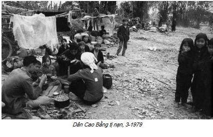
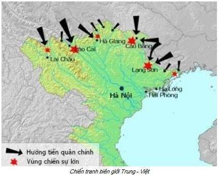
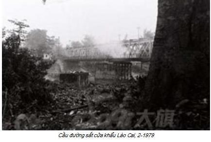
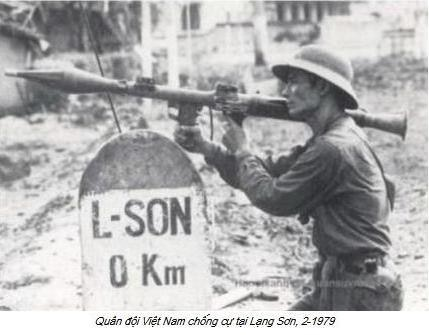
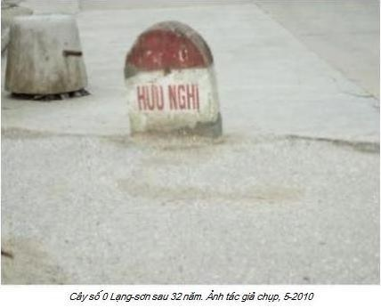

1. Thời Điểm 1979

ang thiu thiu ngủ, vợ tôi lay lay vai, thì thào:
– Mình ơi, hình như có trộm.
Tôi tỉnh hẳn.
Có tiếng sột soạt rất nhẹ phía sát tường cửa sổ.
Lấy chiếc đèn pin ở đầu giường, ra khỏi màn, tôi bước thật nhẹ bằng đầu ngón chân, đến sát cửa sổ, lắng nghe. Ghé mắt qua khe cửa, cây nhãn sừng sững trong bóng đêm, thỉnh thoảng một làn gió nhẹ lướt qua, xào xạc. Đứng im khá lâu, không thấy tiếng động lạ, vào giường, tôi nói nhỏ:
– Không phải đâu, gió đấy.
Vợ tôi thì thầm:
– Mấy đêm nay rồi, cứ giờ này em nghe thấy tiếng gì lạ lắm.
Đồng hồ điểm 11 giờ đêm, tôi nói nhỏ:
– Thôi ngủ đi, mình có quái gì mà trộm mò vào.
Chuyện ấy xảy ra đã một phần ba thế kỷ, tháng 3-1979, mãi sau này về Việt nam thăm bạn cũ, tôi mới biết nhiều đêm có kẻ rình rập nhà tôi. Không phải trộm, chính các cô cậu y tá, dược tá, hộ lý, kế toán, nhà trẻ… đoàn viên thanh niên cộng sản Hồ Chí Minh trong bệnh viện, theo chỉ thị của phó bí thư đảng ủy, kiêm phó giám đốc, Nguyễn Đình Mão, đêm đêm thay nhau rình mò chúng tôi xem có đào hầm chôn mìn, chất nổ hay moi vàng bạc của qúy dưới nền nhà hay không.
Năm 2004, chúng tôi về Việt nam sang cát cho bà ngoại các cháu, nhân tiện lên thăm anh em bệnh viện cũ. Đa số đã về hưu, một số đã trở về cát bụi, bác sĩ Đinh Tất Thắng, đồng nghiệp cũ mời chúng tôi bữa cơm mừng tái ngộ sau một phần tư thế kỷ xa cách.
Trong buổi hàn huyên, Thắng cười, kể:
– Anh chị còn nhớ y tá Tiêm không?
– Nhớ chứ. Cô Tiêm, phòng Đón tiếp khu Đa khoa, gần nhà mình chứ gì?
– Phải. Hè 1980, công đoàn tổ chức lợp nhà giúp Tiêm, trong lúc rỡ mái, em nhặt được túi vải buộc kỹ lắm, dấu ở xà ngang. Mọi người tán, “Chết nhá, phen này giàu to.” Ai cũng tưởng quỹ đen dấu chồng, ai ngờ, sổ tay của y tá Tiêm theo dõi gia đình anh chị năm 78, 79. Cuốn sổ ghi, ai đến chơi, ngày giờ, cả biển số xe đạp. Anh chị biết không, có cả biển số xe đạp của em và bác sĩ Đắc, thế có lạ không?
Thắng cười, bảo:
– Hồi anh chị đi Hong Kong, cả bệnh viện đồn ầm, anh là gián điệp nhị trùng của Mỹ-Trung quốc nằm vùng. Cô Tuyển bên nhà trẻ, cô Thoan bên kế toán, cô Lan bên dược kể, nhiều đêm nấp trong bụi chuối sau nhà, rình anh chị bị muỗi đốt quá chừng vẫn phải ngồi im không dám động đậy, sợ lộ.
Y tá Linh, vợ Thắng nhanh miệng:
– Lão Mão ra lệnh đấy. Hồi ấy tụi chúng nó đang đối tượng đảng. Nhờ chuyện này, sau khi anh chị đi, bọn chúng được kết nạp, đi học y sĩ và dược sĩ một loạt.
Vợ tôi hỏi:
– Con Tiêm và mấy đứa bây giờ ở đâu?
Cô Linh cười:
– Tiêm nghỉ mất sức lâu rồi, còn mấy đứa kia cũng nghỉ một cục (1), bỏ cả sinh hoạt đảng chạy chợ, có hai thằng con, đều nghiện.
Vợ tôi bồi thêm:
– Đáng đời quân tay sai. Làm điều bất nhân làm sao khá lên được.
Từ cuối năm 1978, nhiều gia đình người Hoa rục rịch chạy về “tổ quốc vĩ đại”. Bản tin thời sự đài truyền hình Việt nam thường xuyên đưa cảnh người Hoa vùng biên giới Lạng-sơn, Lào-cai, Móng Cái…. hồi hương qua các cửa khẩu. Người gồng kẻ gánh, xe đạp, xe bò chất đầy đồ, tay xách nách mang, nồi niêu xoong chảo, người già trẻ con dắt díu nhau từng đoàn, từng đoàn nhếch nhác, khổ sở chẳng khác cảnh chạy loạn năm 1946 khi toàn quốc kháng chiến. Gia đình tôi rất hoang mang, rối bời, không biết nên về hay nên ở.
Ngày 17-02-1979, Đặng Tiểu Bình “dạy cho Lê Duẩn bài học” bằng cách tổng tấn công chớp nhoáng trên 600 km đường biên giới. Cuộc chiến tranh chấm dứt sau hơn một tháng, hai bên thiệt hại nặng nề nhưng đều tuyên bố chiến thắng to lớn, vang dội! Cửa khẩu vùng biên đóng cửa, trong khi đó trên mọi phương diện truyền thông -báo chí, đài phát thanh, đài truyền hình- toàn quốc công khai tuyên truyền bài xích, xua đuổi bằng cách đưa tin người Việt gốc Hoa làm gián điệp, làm chỉ điểm, làm tay sai giúp quân Trung-quốc tấn công những cơ sở bí mật của Việt nam, để kích động thù hận.


Vùng biên giới, từ cụ già tóc bạc phơ đến các cháu học sinh người Việt, hễ gặp người Hoa đều chửi thẳng vào mặt, “quân Tầu sao chưa cút về nước?” Có người còn bảo “ở lại làm gián điệp hả.”
Sức ép tâm lý vượt qua sức chịu đựng, vì thế nhiều nơi người Hoa ra đi trắng cả một vùng như đảo Trà Cổ, thị xã Móng Cái không một bóng người.



Từ tháng 4-1979 chính quyền Hà-nội, Hải-phòng và những tỉnh đông người Hoa họ trưng bày triển lãm: “Quân và Dân Ta Đánh Thắng Bọn Bành Trướng Bá Quyền Trung Quốc Xâm Lược”.
Triển lãm treo rất nhiều ảnh người Việt gốc Hoa làm gián điệp. Chuyện người Việt gốc Hoa làm gián điệp có hay không? Thật hư ra sao? Xin trả lời Có và cũng có thể Không (đúng) như những gì các phương tiện truyền thông trong và ngoài nước đã đưa tin.
Trong những ngày tháng khốn khổ, khốn nạn tìm thuyền vượt biển, vô tình tôi đã gặp “hai tên gián điệp người Việt gốc Hoa” từng bị tập đoàn Lê Duẩn dán ảnh truy nã toàn quốc.